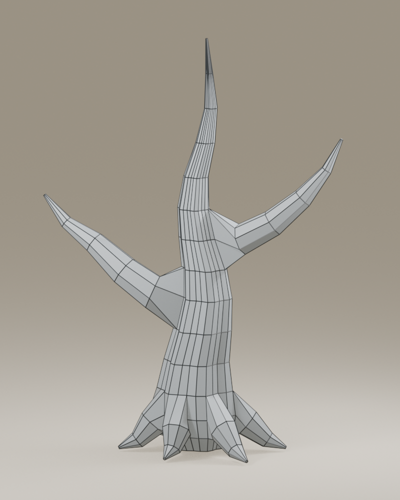
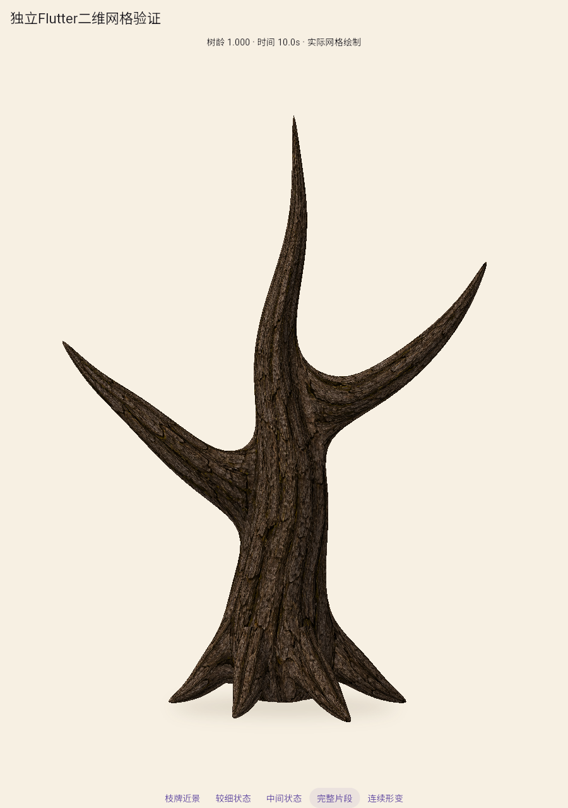
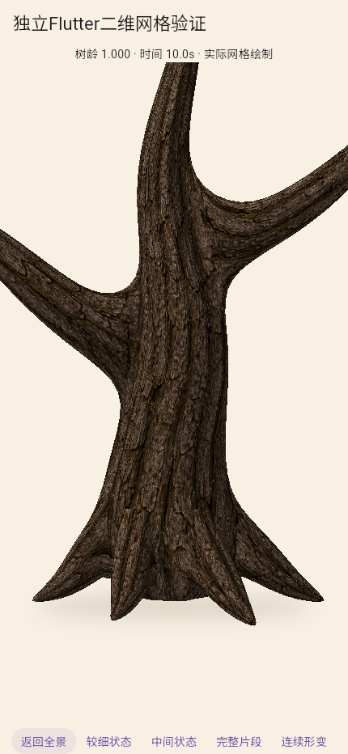
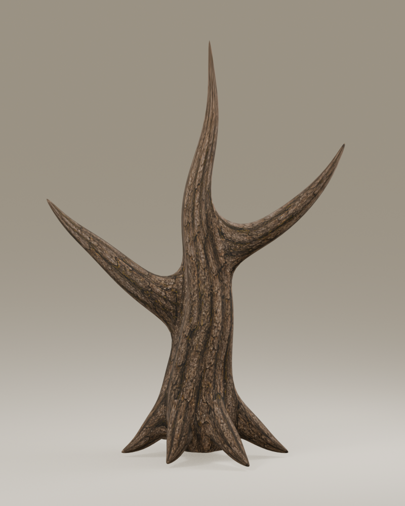
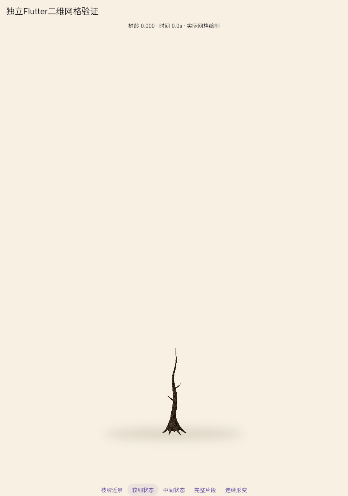
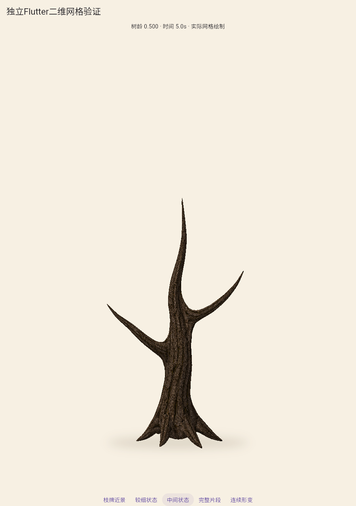
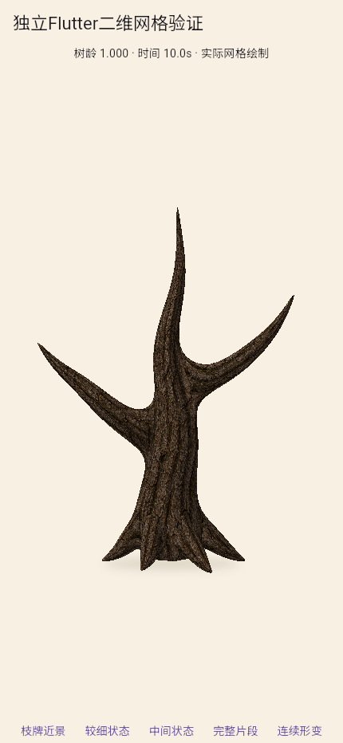
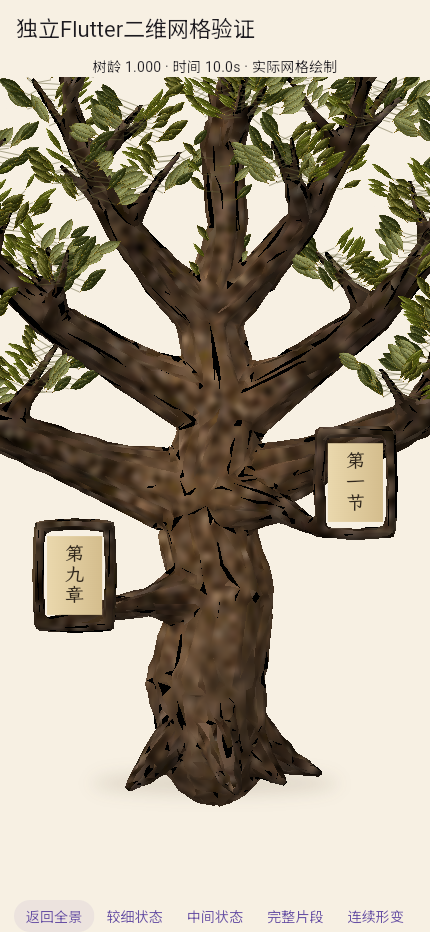

控制面与沿枝UV方法验证
局部根颈与两处分叉，不含叶冠、纸牌；不是完整树苗或成熟整树，A2未通过。前两条自动造型路线的失败结论保留。
新资产由母干开口与子枝共用控制顶点连接，沿枝条带直接重复采样1024树皮。二维实图来自实际Flutter绘制；离线图仅作源资产对照。

576个控制顶点、538面，孔口与子枝边界共用。

实际二维片段：材质可读，尚未制作整树。

接头近景有连续体积；暗部、尖根和纹理方向仍需整树审查。

离线同源对照，不能替代实际二维或真机。

初始测试姿态，没有叶冠，不称为完整树苗。

同一网格、UV和连续骨架插值。

浏览器手机视口，不是真机验收。

旧路线失败近景：自动分图造成模糊黑片。两图形体和相机不同，非定量同条件对照。
局部片段连续形变
101个实际Flutter状态，固定相机、约10.1秒；编码10fps不代表实时绘制速度。
二维结果与哈希 · 控制面结果 · 沿枝UV面积 · 旧元数据分支回归 · 方法判断和下一项